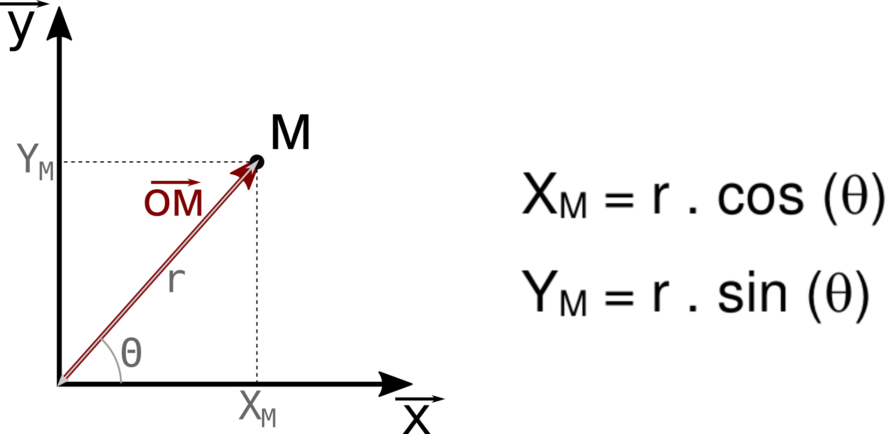
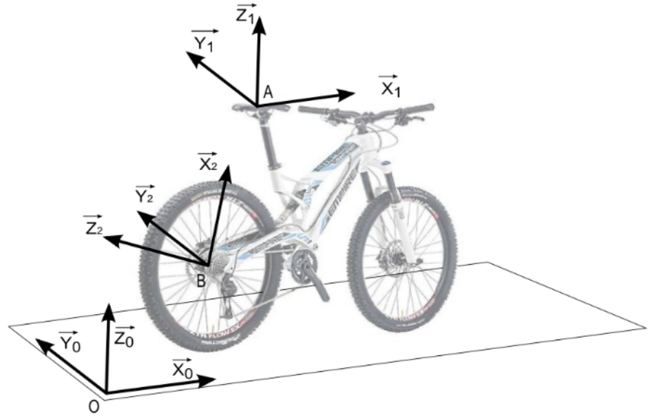
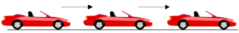
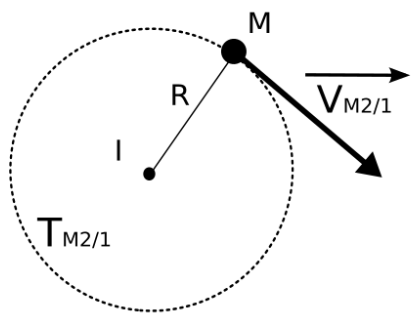
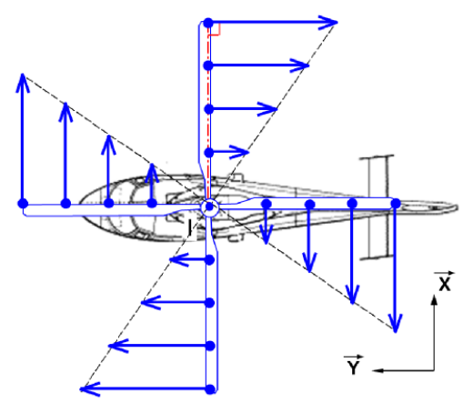

La cinématique du solide est l’étude des mouvements des corps indépendamment des causes qui les provoquent.
La position d’un solide dans l’espace est défini dans un système de coordonnées cartésiennes.
Les coordonnées polaires et cartésiennes sont donc liées par les relations :

L’étude des mouvements nécessite d’utiliser plusieurs repères :

La caractérisation du mouvement dépendra l’évolution du repère mobile par rapport au repère fixe au court du temps.
| Cas N° | Repère fixe | Repère mobile |
|---|---|---|
| 1 | Sol | Vélo |
| 2 | Fourche avant | Roue avant |
| 3 | Roue arrière | Sol |
La trajectoire d’un point par rapport à un repère est une courbe correspondant à la trace laissée par ce point lors de son déplacement.

La trajectoire du point A appartenant à R1 par rapport à R0 : TA∈1/0 :
La trajectoire du point A appartenant à R1 par rapport à R0 : TA∈1/0 : Droite suivant x0
La trajectoire du point A appartenant à R1 par rapport à R1 : TA∈1/1 :
La trajectoire du point A appartenant à R1 par rapport à R1 : TA∈1/1 : Indéfinie (immobile)
La trajectoire du point A appartenant à R1 par rapport à R2 : TA∈1/2 :
La trajectoire du point A appartenant à R1 par rapport à R2 : TA∈1/2 : Cercle de centre B et de rayon BA
Tous les mouvements d’un solide dans l’espace peuvent être décomposés en 6 mouvements élémentaires :

On les appelle des degrés de liberté. Au maximum, un solide peut avoir 6 degrés de liberté (3 translations et trois rotations)
Pour modéliser (représenter) sur un graphique un mouvement de translation rectiligne suivant une direction, nous allons utiliser la liaison glissière :
| Translation rectiligne | Translation circulaire |
|---|---|
|  | |
| @Translation rectiligne | @Translation circulaire |
Pour modéliser (représenter) sur un graphique un mouvement de rotation autour d’un axe, nous allons utiliser la liaison pivot :


La vitesse du solide 2/1 (pales par rapport au cockpit) dépend du point considéré et n’est donc pas uniforme.
